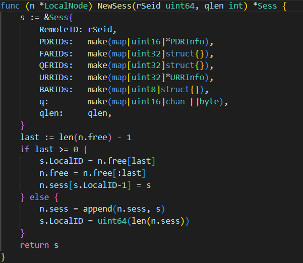
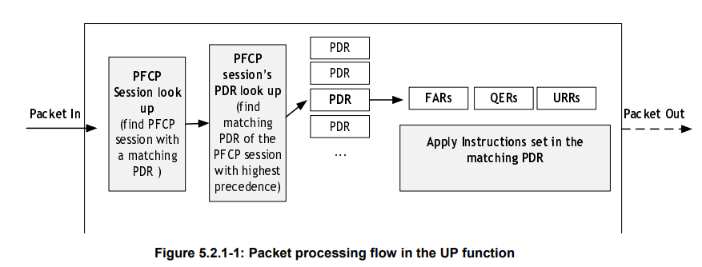
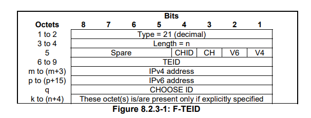

PFCP Session Lifecycle in free5GC: Establish, Modify, and Release Explained
Note
Author: Kai-Xu, Zhan
Date: 2026/02/04
1. Introduction
In the 5G Core architecture, the Packet Forwarding Control Protocol (PFCP) plays a central role in bridging control-plane decisions and user-plane behavior. While high-level system diagrams often describe the responsibilities of the Session Management Function (SMF) and the User Plane Function (UPF), the actual runtime behavior of the user plane is almost entirely dictated by PFCP signaling.
For engineers working with real deployments, PFCP is frequently perceived as a “black box.” Logs show PFCP Session Establishment, Modification, and Release messages flowing between SMF and UPF, yet it is often unclear why sessions are modified multiple times, which rules are affected, and how those rules translate into concrete packet processing behavior.
This article explains the PFCP Session lifecycle in free5GC—Establish, Modify, and Release—by combining:
- 3GPP specification concepts and procedures,
- Detailed explanations of key PFCP rule types and Information Elements,
- Concrete references to free5GC’s implementation structure and design choices.
The objective is to help engineers read PFCP traces, understand UPF behavior, and debug user-plane issues with confidence.
Note
In the context of PFCP within free5GC, the SMF acts as the Control Plane (CP), while the UPF implements the User Plane (UP).
2. PFCP Association and PFCP Session in free5GC
Before examining PFCP sessions themselves, it is important to distinguish between PFCP Association and PFCP Session. These two concepts operate at different scopes and serve different purposes in the control–user plane relationship.
2.1 PFCP Association
A PFCP Association represents a long-lived control-plane relationship between an SMF and a UPF. It is not merely a connectivity check; rather, it establishes mutual awareness of capabilities, liveness, and restart state.
According to 3GPP TS 29.244 (Section 5.8), the PFCP Association Setup procedure establishes several prerequisites that must be satisfied before any PFCP Session can exist:
- Node identity exchange,
- Capability negotiation,
- A heartbeat mechanism for failure detection.
These aspects are conveyed through PFCP Information Elements. Key IEs involved in PFCP Association Setup include:
| IE | Description |
|---|---|
| Node ID | Uniquely identifies the CP or UP node using an IP address or FQDN |
| Recovery Time Stamp | Allows detection of UPF restarts and loss of PFCP session state |
| CP Function Features / UP Function Features | Advertise supported PFCP capabilities |
From an architectural perspective, PFCP Associations are not limited to a one-to-one relationship. A single SMF can maintain associations with multiple UPFs, and a UPF may serve multiple SMFs. This flexibility enables scalable user-plane deployments and dynamic traffic steering.
A crucial rule defined by the specification is that PFCP Session–related messages must be rejected if no PFCP Association exists. This ensures that all session state is created and managed only within a valid and synchronized control relationship.
In free5GC:
-
On the SMF side, PFCP Association handling is implemented under
NFs/smf/internal/sbi/processor/association.go. -
On the UPF side, PFCP Association logic is implemented in
NFs/upf/internal/pfcp/association.go.
Importantly, PFCP Association does not create any forwarding rules. It merely prepares the control and user planes to exchange PFCP Session messages reliably.
2.2 PFCP Session
A PFCP Session is the fundamental unit that binds control-plane intent to user-plane behavior. Each PFCP Session corresponds conceptually to a PDU session and acts as a container for all PFCP rules that define packet detection, forwarding, QoS enforcement, and usage reporting.
PFCP Session procedures and identifiers are defined in 3GPP TS 29.244 (Section 5.6).
2.2.1 Session Identification with SEID
Each PFCP Session is identified by a Session Endpoint Identifier (SEID). SEIDs are allocated independently by the control plane and the user plane:
-
The SMF allocates a CP-side SEID.
-
The UPF allocates a UP-side SEID.
During PFCP Session Establishment:
1. The SMF sends a Session Establishment Request with its CP SEID carried in the CP F-SEID IE.
2. The UPF allocates a local SEID and returns it in the UP F-SEID IE of the response.
At the protocol level, the SEID in the PFCP message header is used to locate local session state. For this reason:
-
The Session Establishment Request typically uses a SEID value of
0in the header, since the UP-side SEID is not yet known. -
All subsequent PFCP messages carry the receiver’s SEID in the header.
In practice:
-
CP → UP messages carry the UP-side SEID.
-
UP → CP messages carry the CP-side SEID.
In free5GC:
-
The SMF allocates and stores CP-side SEIDs in the SM context (
NFs/smf/internal/context/sm_context.go).

Figure 1: CP-side SEIDs in free5GC -
The UPF creates PFCP session state and allocates its own SEID upon receiving the establishment request (
NFs/upf/internal/pfcp/node.go).

Figure 2: UP-side SEIDs in free5GC
2.2.2 Session Content and Ownership
Once identified, the PFCP Session contains a set of PFCP rules that define user-plane behavior. These rules include:
-
Packet Detection Rules (PDRs),
-
Forwarding Action Rules (FARs),
-
QoS Enforcement Rules (QERs),
-
Usage Reporting Rules (URRs),
-
Buffering Action Rules (BARs).
In free5GC, rule state is owned by the UPF, not the SMF. The SMF constructs PFCP messages dynamically based on session context, while the UPF maintains persistent rule state and applies it during packet processing.
3. PFCP Rule Building Blocks
PFCP rules are reusable building blocks that can be created, modified, or removed as a PFCP Session evolves. Understanding these rule types is essential for interpreting PFCP Session procedures.
3.1 Packet Processing Overview

Figure 3: Packet Processing Flow (source: 3GPP TS 29.244)
In the UPF, packet processing follows a logical pipeline:
-
Packet detection using PDRs,
-
Optional outer header removal,
-
QoS enforcement and usage measurement,
-
Forwarding, buffering, or dropping based on FARs.
3.2 Packet Detection Rule (PDR)
A Packet Detection Rule defines how packets are classified and associated with a PFCP Session. Every packet processed by the UPF must match a PDR.
Key PDR Information Elements
| IE | Purpose |
|---|---|
| PDR ID | Uniquely identifies the PDR |
| Precedence | Determines matching priority |
| PDI | see PDI. |
| Outer Header Removal | Defines decapsulation behavior, see Outer Header. |
| FAR ID | References forwarding behavior |
| QER ID | References QoS enforcement |
| URR ID | References usage reporting |
3.2.1 Packet Detection Information (PDI)
The PDI specifies the actual packet matching conditions.
| IE | Purpose |
|---|---|
| Source Interface | Indicates ingress interface (e.g., N3, N6) |
| F-TEID | see F-TEID |
| UE IP Address | Matches downlink traffic |
| SDF Filter | 5-tuple packet filtering |
| Network Instance | Identifies the Data Network |
3.3 Forwarding Action Rule (FAR)
A FAR defines the action applied after a packet matches a PDR.
| IE | Purpose |
|---|---|
| FAR ID | Identifies the FAR |
| Apply Action | Forward, drop, or buffer |
| Forwarding Parameters | see Forwarding Parameters |
3.3.1 Forwarding Parameters
| IE | Purpose |
|---|---|
| Destination Interface | Indicates egress interface (e.g., N3, N6). |
| Outer Header Creation | Defines encapsulation behavior, see Outer Header. |
| Forwarding Policy | Control-plane forwarding policy applied by the UPF. |
3.4 QoS Enforcement Rule (QER)
A QER defines rate limiting, gating, and QoS flow mapping.
| IE | Purpose |
|---|---|
| QER ID | Identifies the QER |
| QER Correlation ID | Correlates multiple QERs, allowing the UP function to apply them consistently. |
| Gate Status | Allows or blocks traffic |
| Maximum Bitrate (MBR) | Defines the maximum uplink and downlink bitrates. |
| Guaranteed Bitrate (GBR) | Defines the guaranteed uplink and downlink bitrates. |
| QFI | The QoS Flow associated with this QER, enabling QoS enforcement per flow. |
3.5 Usage Reporting Rule (URR)
A URR defines how usage is measured and reported.
| IE | Purpose |
|---|---|
| URR ID | Identifies the URR |
| Measurement Method | volume-based, time-based, or event-based measurement |
| Reporting Triggers | Defines the conditions that trigger a Usage Report |
| Measurement Period | The periodic reporting interval. If not present, periodic reporting is disabled. |
| Quota | Indicates the provisioned usage quota. |
| Threshold | Indicates the usage threshold value at which the UP function shall report network resource usage. |
3.6 Buffering Action Rule (BAR)
A BAR controls downlink packet buffering behavior, typically used when the UE is temporarily unreachable.
| IE | Purpose |
|---|---|
| BAR ID | Identifies the BAR. |
| Downlink Data Notification Delay | Controls notification timing for buffered data. |
| Suggested Buffering Packets Count | Indicates the number of packets that should buffer before triggering a notification. |
4. PFCP Session Establishment
PFCP Session Establishment is the procedure used by the control plane (SMF) to create a new PFCP session in the user plane (UPF). From an implementation perspective, this procedure is where the UPF is first programmed with all rule state required to process user traffic for a PDU session.
4.1 Procedure Overview
The PFCP Session Establishment procedure consists of two messages:
-
PFCP Session Establishment Request
-
PFCP Session Establishment Response
The SMF sends a Session Establishment Request to the UPF, containing one or more rule definitions. If the request is accepted, the UPF creates a PFCP session context and replies with a successful response.
4.2 Rule Installation during Session Establishment
Packet Detection Rules (PDRs)
PDRs created during establishment define how packets belonging to the session are detected. In most deployments, at least two PDRs are installed:
-
Uplink PDR
Matches packets received on the N3 interface, commonly using an F-TEID or SDF Filter. -
Downlink PDR
Matches packets received on the N6 interface using the UE IP address.
Each PDR references the corresponding FAR, and may also reference one or more QERs and URRs. Precedence values are chosen so that more specific rules are evaluated before generic ones.
Forwarding Action Rules (FARs)
FARs define what happens after packet detection. During Session Establishment, FARs typically configure:
-
Forwarding of uplink traffic toward the data network (N6)
-
Forwarding of downlink traffic toward the RAN (N3), including outer header creation
-
Optional buffering or dropping behavior depending on session state
These FARs encode the basic traffic path for the PDU session.
QoS Enforcement Rules (QERs)
QERs installed during establishment define the initial QoS behavior applied to the session. This includes:
-
Gate status (open or closed)
-
Maximum and guaranteed bitrates
-
Mapping to QoS flows via QFI
Multiple QERs may be associated with a single PDR to support multiple QoS flows.
Usage Reporting Rules (URRs)
URRs enable traffic measurement and reporting from the UPF to the SMF. During establishment, URRs typically specify:
-
Measurement method (volume, time, or event based)
-
Reporting triggers such as quota exhaustion or threshold crossing
-
Optional periodic reporting intervals
Installing URRs at establishment ensures that usage data is collected from the moment the session becomes active.
4.3 Session Establishment Response
In the PFCP Session Establishment Response, the UPF confirms:
-
Successful creation of the PFCP session
-
Acceptance or rejection of rules
-
Assigned UPF F-SEID UPF F-SEID ( see F-TEID )
Once the response is received, the PFCP session is considered active, and the UPF begins processing packets according to the installed rules.
5. PFCP Session Modification
PFCP Session Modification is used to update an existing PFCP session.
Unlike Session Establishment, which creates the initial session state, Session Modification allows the control plane to dynamically adapt user-plane behavior as the session evolves.
Typical triggers for session modification include:
-
QoS changes
-
Traffic steering updates
-
Charging or reporting policy updates
5.1 Procedure Overview
The PFCP Session Modification procedure consists of:
- PFCP Session Modification Request
- PFCP Session Modification Response
The SMF sends a Modification Request referencing an existing PFCP session using the UP-side SEID. The request may include rule creations, updates, or removals. The UPF applies the requested changes atomically and responds with the outcome.
5.2 Rule Lifecycle Operations
Session Modification supports three fundamental operations on PFCP rules:
-
Create: Add new rules to the session
-
Update: Modify parameters of existing rules
-
Remove: Delete rules that are no longer needed
These operations allow fine-grained control over user-plane behavior without tearing down the session.
PDR Updates
PDRs are often modified during mobility events or traffic steering scenarios. Common updates include:
-
Updating packet matching criteria (e.g., new SDF Filters)
-
Adjusting precedence values
-
Rebinding to different FARs, QERs, or URRs
FAR Updates
FAR modifications typically reflect changes in forwarding behavior, such as:
-
Switching the destination interface
-
Updating outer header creation parameters
-
Enabling or disabling buffering behavior
These changes directly affect how packets are forwarded through the user plane.
QER Updates
QERs are frequently modified to reflect dynamic QoS adjustments, including:
-
Changes to MBR or GBR values
-
Opening or closing traffic gates
-
Updating QFI associations
Such updates allow the network to adapt QoS treatment without interrupting the session.
URR Updates
URRs may be updated to control charging and monitoring behavior, for example:
-
Changing reporting thresholds
-
Resetting usage counters
-
Enabling or disabling periodic reporting
5.3 Session Modification Response
The UPF responds with a Session Modification Response indicating:
-
Overall procedure success or failure
-
Any updated state information required by the control plane
6. PFCP Session Release
PFCP Session Release is used to terminate a PFCP session and remove all associated user-plane state from the UPF.
This procedure is typically triggered when:
-
A PDU session is released
-
The control plane determines the session is no longer needed
6.1 Procedure Overview
The PFCP Session Release procedure consists of:
-
PFCP Session Release Request
-
PFCP Session Release Response
The SMF sends a Release Request referencing the existing PFCP session. Upon receiving the request, the UPF proceeds to dismantle all session-related state.
6.2 Rule Deletion and Resource Cleanup
When processing a Session Release Request, the UPF:
-
Deletes all PDRs, FARs, QERs, URRs, and BARs associated with the session
-
Stops packet detection and forwarding for the session
-
Releases allocated resources such as buffers, counters, and QoS state
Before removing URRs, the UPF may generate final usage reports if reporting triggers or quotas are configured, ensuring that charging information is not lost.
6.3 Session Release Response
In the Session Release Response, the UPF confirms that:
-
The PFCP session has been successfully removed
-
All associated rules and resources have been released
After this response, the PFCP session no longer exists in the UPF.
7. Conclusion
Understanding the PFCP Session lifecycle is essential for deploying, debugging, and optimizing free5GC. While the 3GPP specifications define the protocol, real insight comes from understanding how PFCP Establishment, Modification, and Release map to actual rule creation and packet processing behavior.
By correlating PFCP messages, rule semantics, and free5GC implementation details, engineers can transform PFCP from a perceived black box into a transparent and predictable control interface.
8. Supplementary PFCP Concepts
This section summarizes two PFCP concepts that frequently appear in Session Establishment and Modification procedures and are essential for understanding how the UPF processes tunneled traffic.
8.1 F-TEID

Figure 4: F-TEID IE
The F-TEID (Fully Qualified Tunnel Endpoint Identifier) is used by the UPF to identify incoming GTP-U packets and associate them with the correct Packet Detection Rule (PDR). It allows the UPF to distinguish multiple GTP-U tunnels on the same interface and apply the appropriate forwarding, QoS, and reporting rules.
F-TEID is mutually exclusive with the Traffic Endpoint ID:
-
F-TEID is used for GTP-U tunnel–based packet detection
-
Traffic Endpoint ID is used for non–GTP-U scenarios
The CH (CHOOSE) bit determines who assigns the F-TEID.
CH = 0 (Control Plane–assigned F-TEID)
When CH is set to 0, the control plane explicitly provides the complete F-TEID, including:
-
TEID
-
IPv4 address (if V4 = 1)
-
IPv6 address (if V6 = 1)
In this mode, the UPF does not generate any tunnel identifiers and directly uses the provided F-TEID for PDR matching. This gives the control plane full control over tunnel allocation.
CH = 1 (UPF-assigned F-TEID)
When CH is set to 1, the TEID and IP address fields are omitted, and the UPF is instructed to allocate the F-TEID autonomously. The control plane may still indicate whether IPv4 and/or IPv6 should be used via the V4 and V6 flags.
In free5GC, the control plane assigns the F-TEID as an implementation choice. The SMF pre-allocates the TEID, includes the complete F-TEID in the PFCP Session Establishment Request with CH = 0, and the UPF directly applies it for GTP-U packet detection without performing dynamic tunnel allocation.
8.2 Outer Header
An outer header is a transport encapsulation added to or removed from a user-plane packet to enable delivery over tunnel-based interfaces. It typically consists of GTP-U, UDP, and IP headers and is not part of the original user payload.
In the UPF, outer header handling is controlled by PDRs and FARs and serves as the boundary between tunnel-based and non-tunnel interfaces.
Outer Header Removal
Outer Header Removal strips the transport encapsulation from incoming packets before further processing. It is commonly applied to uplink traffic received on tunnel-based interfaces such as N3, allowing the inner packet to be forwarded toward non-tunnel interfaces.
Outer Header Creation
Outer Header Creation adds a transport encapsulation to outgoing packets prior to transmission. It is typically applied to downlink traffic forwarded toward tunnel-based interfaces and is specified in the forwarding parameters of a FAR.
Together, these operations enable the UPF to interwork seamlessly between tunneled and non-tunneled segments of the user plane.
References
About
Hello, I'm Kai-Xu Zhan. I'm honored to be a new member of the free5GC project under the Linux Foundation. As someone who is still learning and growing in the field of 5G core network development, I'm enthusiastic about contributing to the community and expanding my knowledge in telecommunications technologies. I welcome any guidance or feedback as I continue to familiarize myself with the project.
Connect with Me
- GitHub: KASHZKX